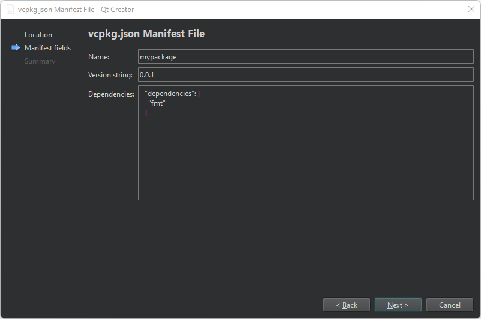

Create vcpkg manifest files
To create a new vcpkg package manager manifest (vcpkg.json) file:
- Select File > New File > vcpkg > vcpkg.json Manifest File > Choose to open the Location dialog.
- In File name, enter a name for the manifest file.
- In Path, enter the path for the manifest file.
- Select Next to open the vcpkg.json Manifest File dialog.

- In Name, enter a name for the manifest file.
- In Version string, enter a version number for the file.
- In Dependencies, enter the packages to manage.
You can add packages later in a manifest editor.
- Select Next to open the Project Management page.
- Select Finish to create the file.
The wizard automatically adds the vcpkg.json file to the CMakeLists.txt file of the project.
See also vcpkg Package Manager and Edit vcpkg manifest files.